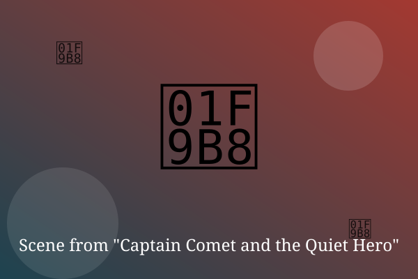

Chapter 1: The Accidental Cape

Theo's power was flying, which was great, except that it happened whenever he got embarrassed.
In the school cafeteria, he tripped, blushed, and floated gently up to the ceiling in front of everyone.
'Cool,' said his classmate Ruth. 'Can you get my phone off that fan?' Nobody screamed, and that was oddly worse.
— End of Chapter —